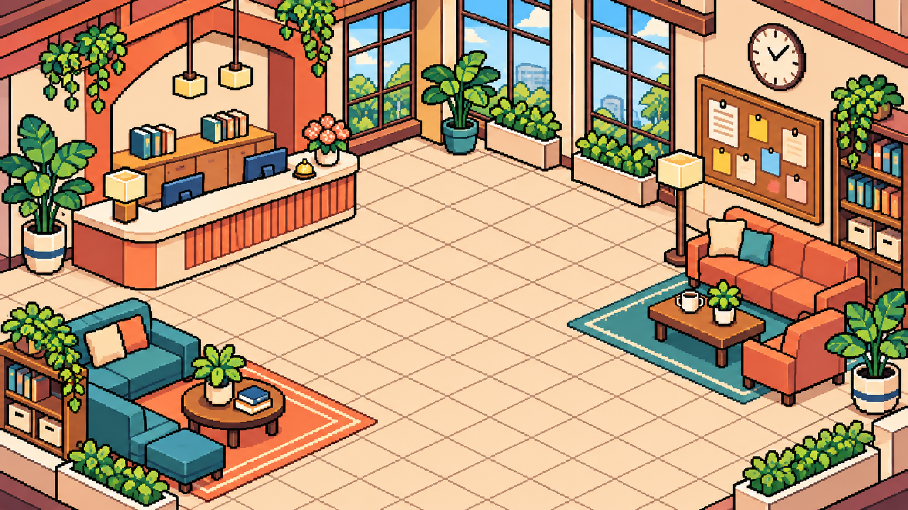

聚
聚空間大廳
MEETING PLACE STAFF LOBBY
本機測試模式
4
人在大廳
角色外觀
打開留言
MEETING PLACE · STAFF LOBBY
↑
↓
←
→
移動
或點擊地板

櫃檯
交班牆
3
帶看行程
2
休息區
安安
在線
小樂
巡館完成
管理員
處理中
早安！
你
值班中
▲
◀
▼
▶
CHARACTER CUSTOMIZE
角色外觀
×
女生 · 新手布衣
角色性別
女生
男生
髮型
雙馬尾
長直髮
短鮑伯
高馬尾
服裝款式
騎士鎧甲
法師斗篷
盜賊皮裝
皇家禮服
新手布衣
服裝配色
珊瑚
薄荷
暮藍
暖金
配件
不配戴
像素眼鏡
值班帽
目前狀態
值班中
巡館中
休息一下
紙娃娃會分層套用性別輪廓、髮型、服裝、顏色與配件，並同步至四方向步行動畫。
NEW HOUSE TOUR
安排帶看
×
日期 *
時間 *
館別 *
請選擇
古亭一館
古亭二館
師大館
中山館
松山館
信義館
房間／床位 *
看房人姓名 *
聯絡方式
負責小幫手 *
我
安安
小樂
管理員
狀態
待確認
已確認
備註
本機原型：資料只會保留在這台裝置，不會通知看房人。